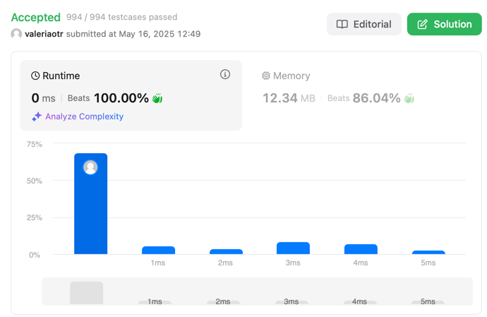

Деление двух целых чисел без оператора деления
Описание задачи
Даны два целых числа — dividend (делимое) и divisor (делитель). Требуется выполнить деление, не используя операторы умножения, деления и остатка от деления (*, /, %).
Результат должен быть усечён в сторону нуля, то есть дробная часть отбрасывается.
Если результат выходит за пределы диапазона 32-битного знакового целого числа [-2³¹, 2³¹ − 1], необходимо вернуть крайнее допустимое значение.
Примеры
Пример 1
Вход: dividend = 10, divisor = 3
Выход: 3
Пояснение: 10 / 3 = 3.333…, после усечения остается 3.
Пример 2
Вход: dividend = 7, divisor = -3
Выход: -2
Пояснение: 7 / -3 = -2.333…, усечение дает -2.
Ограничения
- −2³¹ ≤ dividend, divisor ≤ 2³¹ − 1
- divisor ≠ 0
- Окружение поддерживает только 32-битные знаковые целые числа
Объяснение
- Решение использует битовые сдвиги для ускорения повторного вычитания (temp <<= 1 означает умножение temp на 2).
- Подсчитываем, сколько раз делитель может быть вычтен из делимого.
- После того как вычитание завершено, возвращается результат с нужным знаком.
- Учитывается переполнение: INT_MIN / -1 дает значение, большее допустимого диапазона.
Сложность
- Временная сложность: O(log N), где N — значение делимого. Мы вычитаем делитель удвоенными шагами.
Результат
